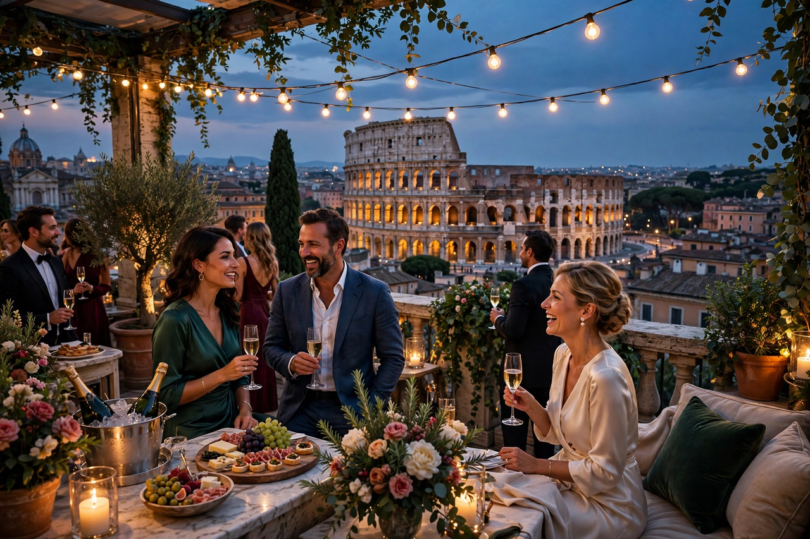

| The Great Beauty | |
|---|---|
 Jep's terrace overlooking the Colosseum | |
| Directed by | Paolo Sorrentino |
| Written by | Paolo Sorrentino, Umberto Contarello |
| Starring | Toni Servillo |
| Release date | 2013 |
| Country | Italy |
| Language | Italian |
The Great Beauty (Italian: La grande bellezza) is a 2013 Italian drama film co-written and directed by Paolo Sorrentino. It stars Toni Servillo as Jep Gambardella, a 65-year-old journalist and socialite who, having written one acclaimed novel in his youth, has spent decades hosting lavish parties in Rome. After a shock from his past, Jep begins to look past the city's hollow nightlife toward its enduring beauty. The film won the Academy Award for Best Foreign Language Film at the 86th Academy Awards.
The film opens with Jep's extravagant 65th birthday party on his terrace opposite the Colosseum. A sequence of episodes follows — failed artists, ageing aristocrats, a child "saint," strip clubs and Botox parties — intercut with Jep's memories of his first love, Elisa, whose husband arrives to tell him she has died, having loved Jep all her life. Jep's search for "the great beauty" ends with him resolving to write again, as Mother Maria, a 104-year-old missionary nun, climbs a holy staircase on her knees.
Premiered in competition at Cannes in 2013, the film drew comparisons with Fellini's La Dolce Vita for its portrait of Roman decadence. It won major prizes including the Oscar, the BAFTA, and the Golden Globe for Best Foreign Language Film, and appears on many lists of the best films of the 21st century.